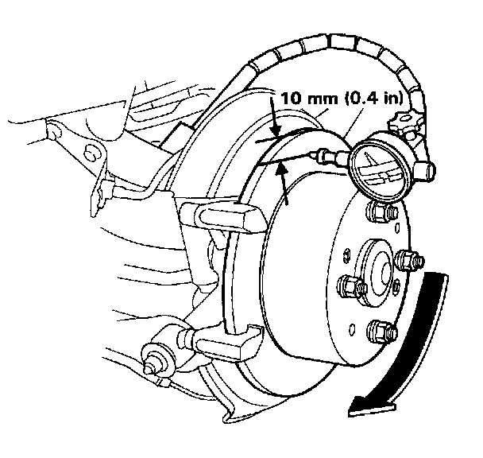

Disc Runout
Rear Brake Disc Runout Inspection1. Loosen the rear wheel lug nuts slightly, then raise the car and support on safety stands. Remove the rear wheels.
2. Remove the brake pads. Service and Repair
3. Inspect the disc surface for grooves, cracks, and rust. Clean the disc thoroughly and remove all rust.
4. Use wheel nuts and suitable plain washers to hold the disc securely against the hub, then mount a dial indicator as shown and measure the runout at 10 mm (0.4 in) from the outer edge of the disc.
Brake Disc Runout:
Service Limit: 0.10 mm (0.004 in)

5. If the disc is beyond the service limit, refinish the rotor.
Max. Refinishing Limit: 8.0 mm (0.31 in)
NOTE: A new disc should be refinished if its runout is greater than 0.10 mm (0.004 in).